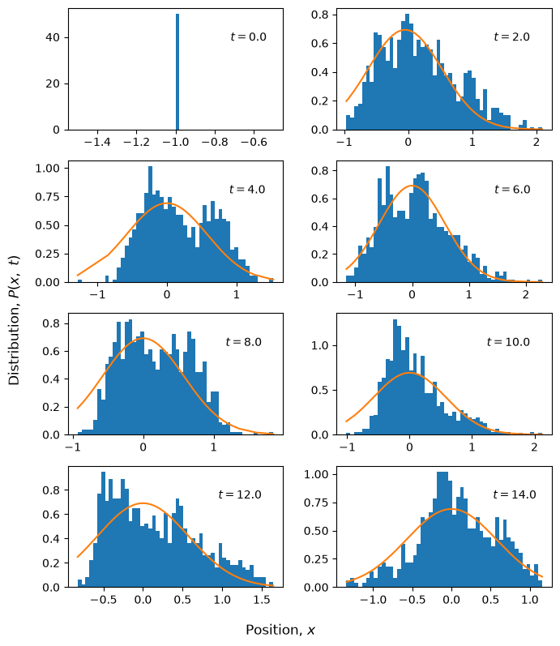
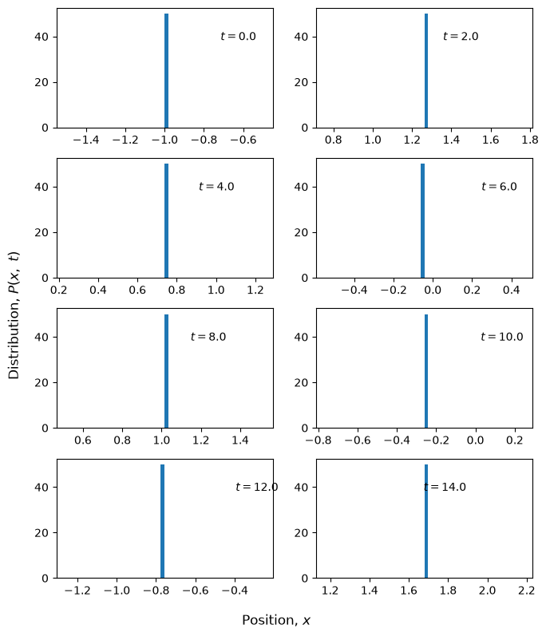

- Generated by
 1.18.0
1.18.0
|
NDXL v1.0.0
|
The preceeding examples have all looked at vertices whose agents evolve deterministically i.e., repeated runs of the same simulation result in the same outputs and have the same analytical solution. This is not the case for stochastic differential equations (SDEs), which are explicitly designed to simulate agents that have an element of randomness in their dynamics. Before we can begin solving SDEs, we need to understand several key concepts used in their definitions.
The random fluctuations in an SDE are assumed to follow Brownian motion, and the individual microscopic fluctuations over time are collectively referred to as a Wiener path. The system can have multiple Wiener paths simultaneously influencing its stochastic motion, and these are called noise channels. NDXL explicitly defines a single noise channel via the NDXLChannel object i.e., each NDXLChannel is an independent Wiener process. This makes local noise functions in NDXL only responsible for returning the \(D^\prime\times M^\prime\) diffusion submatrix of the agent they are associated with, where \(D^\prime\) and \(M^\prime\) are respectively the state vector cardinality and number of noise channels of that agent.
An SDE for a \(D\)-dimensional state vector \(\vec{X}\) is defined most generally as
\[ d\vec{X} = f(\vec{X},~t)dt + g(\vec{X},~t)dW \]
Here, \(f\) is called the deterministic drift function, \(g\) is the stochastic diffusion matrix, and \(W\) ( \(dW\sim\mathcal{N}(0,~h)\)) is a Wiener process (increment). Multiple \(M\) independent noise sources can influence the system simultaneously, so the diffusion matrix has dimensions \(D\times M\), whose entries \(g_{ij}\) are the amplitude of noise channel \(j\) on component \(i\) of the state vector. This interpretation has several important consequences for agent-based modelling:
For static stepping algorithms like Euler-Maruyama, steps are taken to be successful regardless of the local error or behaviour of the Brownian path. This makes them far more inaccurate than their adaptive counterparts, and should only ever be used as a "preview" of the stochastic output (assuming a very small step size e.g., \(h\sim10^{-5}\)) rather than a complete simulation output.
Adaptive algorithms like Heun-Euler estimate local error based on user-defined tolerances, and this is where the stochasticity of the system becomes problematic. If a step is rejected in a deterministic ODE, we know it was because the difference between the two solutions was too large over that step, and the step is simply reduced and retried. In SDEs, however, the deterministic drift functions could agree nearly perfectly, but the stochastic diffusion components cause the paths to diverge too much, raising the local error. This means a step can be rejected effectively by random chance.
However, the rejection event itself cannot simply be discarded as a "chance effect"; if we simply reject the step and retry with a fresh Wiener increment, we lose information about why the step was initially rejected, which introduces statistical bias into the Wiener path as a whole. This is where an algorithm called Rejection Sampling with Memory (RSwM) comes in. Without going into too much detail, RSwM constructs a Brownian bridge between the rejected step and previously accepted step, which allows for a deterministic interpolation of an intermediate step that should be attempted first, followed by a step that takes us back to the originally rejected time point. This preserves the statistical integrity and distribution properties of the underlying Wiener process, making adaptive stochastic methods far more suitable for actual simulations involving SDEs.
A further complication with SDE solvers is the calculus behind the solving method, which we eluded to in the Stochastic methods section of the Concepts page. Briefly, the two main schemes are the Itô and Stratonovich interpretations, and the differences between them come down to the mathematical properties preserved:
Fortunately, switching between the schemes is rather simple, requiring only a correction term in the drift function. This "drift correction term" is defined for component \(i\) of the state vector \(\vec{X}\) as
\[ \frac{1}{2}\displaystyle\sum_{j=1}^M{\displaystyle\sum_{j=1}^D{g_{kj}(\vec{X},~t)\frac{\partial g_{ij}(\vec{X},~t)}{\partial x_k}}} \]
If solving a Stratonovich equation using an Itô solver, add the correction to the drift...
\[ dX_i = \left[f_i(\vec{X},~t) + \frac{1}{2}\displaystyle\sum_{j=1}^M{\displaystyle\sum_{j=1}^D{g_{kj}(\vec{X},~t)\frac{\partial g_{ij}(\vec{X},~t)}{\partial x_k}}}\right]dt + \displaystyle\sum_{j=1}^M{g_{ij}(\vec{X},~t)dW_j} \]
...and subtract it if using a Stratonovich solver to solve an Itô equation.
Let us now simulate an ensemble of Ornstein-Uhlenbeck particles, which models the position \(x\) of particle \(i\) as
\[ dx_i = -\Gamma x_i{\rm d}t + \sigma dW_i. \]
From the equation, we can see that all particles are affected by only one Wiener process, but the process driving each particle is unique. We start by defining our drift and diffusion functions, which correspond to the dynamics and noise functions in NDXL, respectively. Where the dynamics function's output was an array with length \(D\), the noise function's output is a flattened matrix (array) with dimensions (length) \(D\times M\)
Because each particle's Wiener driver is unique, we do not have to create any noise channels. Instead, we can simply specify the noise function and number of noise channels, leaving the _Channels argument itself NULL, which NDXL interprets as "create `_Nchannels` new noise channels" (see ndxlCreateVertex()).
Because our network has stochastic agents, NDXL will raise a NDXL_SIM_ERR if we try to simulate the network using one of the deterministic methods shown previously (similarly, one cannot use the stochastic methods on a purely deterministic network). As explained above, we want to use an adaptive method so that the RSwM algorithm's path preservation is in effect. Similar to the N-Body example, we will also define a series of time stops at which to take snapshots of the simulated output.
We will modify our Ornstein-Uhlenbeck ensemble above to have all particles driven by the same Wiener process; what we expect is the initial distribution to simply change position, not shape, as all particles are perturbed by the same random amount each time step. To achieve this, we will create a NDXLChannel before the vertices and assign it as the only channel to each vertex's _Channels array.
Interestingly, the analytical solution to this model approaches a Gaussian distribution with zero mean, and variance \(\Sigma^2=\frac{\sigma^2}{2\Gamma}\). We can therefore compare our distributions (blue) to the analytical soltuion (orange) over time, as shown in the images below.

Independent Wiener processes | 
Shared Wiener process |